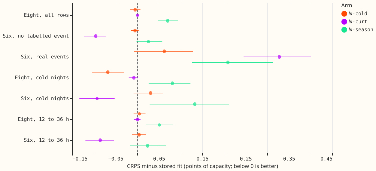

Does weighting the fine-tuning rows toward cold nights, high-flow half-hours at the signed-MW six, or winter improve the demand network on those rows without losing elsewhere?
Weighting the fine-tuning rows toward hard rows did not help
Take-home message. The weights did not improve the forecast on the rows NGED cares about by more than the noise floor, and winter weighting raised CRPS. The result suggests the hard rows are limited by the inputs, so the next experiment could change an input or the neural-network architecture, not the weights.
We fine-tuned experiment 425's pretrained demand network (five folds, three seeds each) with a weight of 3 on cold nights (W-cold), on half-hours at or above 0.75 times a Primary's maximum flow at the signed-MW six (W-curt), and on December to February (W-season). The reference W0 is experiment 425's own stored fit: a W0 refit of 2026-01, seed 0 reproduced it exactly. Scores are CRPS in points of effective capacity on experiment 470's rows, 1.15 widening, month-block bootstrap with Bonferroni intervals (count 27). All scores are selection-biased, because the five folds that choose also score.

Arms
- W0. Experiment 425's stored arm A fits, seeds 0 to 2 (pretrained weights
00425-.../work/pretrained/A/{month}_s{0-2}.pt). - W-cold. Weight 3 on night half-hours (sun below -5 degrees) with ERA5 temperature at or below 3 degrees Celsius.
- W-curt. Weight 3 on half-hours at the signed-MW six (D5, D9, D10, D11, D14, D16) whose flow is at least 0.75 times that Primary's maximum flow in the fold's window.
- W-season. Weight 3 on local December, January, and February.
- Compute. 45 fine-tunes, about 35 s each (about 0.5 GPU-hours), one GPU process.
Results
- Minimum detectable effect (printed before any contrast; three-seed mean). 0.083 at the eight, 0.112 at the six on rows with no labelled event, 0.169 on cold nights at the eight, and 0.236 on cold nights at the six.
- W-cold does not meet P1. Cold-night CRPS at the eight fell by 0.068 [-0.104, -0.031], inside the 0.169 minimum detectable effect, so the contrast is inconclusive at the eight. At the six it rose by 0.031 [-0.008, +0.060]. All-row CRPS changed by -0.005 at the eight and the six.
- W-curt does not meet P3. Avoidable-curtailment cost at f = 0.75 changed by -0.065 million pounds [-0.46, +0.31] against a required -0.1 with an interval below it. At f = 0.9 it rose by 0.079 [-0.03, +0.27] and at f = 0.5 it changed by -0.073 [-0.78, +0.57]. Its CRPS fell by 0.096 [-0.122, -0.072] at the six on rows with no labelled event (inside the 0.112 minimum detectable effect) and by 0.093 on cold nights at the six, but rose by 0.328 [+0.245, +0.402] on real-event rows scored against normal-running-arrangement actuals. The loss bound of 0.02 points is defined on the eight and the six overall; read on the real-event rows, it is not met.
- W-season raises CRPS. The rises are inside the minimum detectable effect, but the Bonferroni intervals exclude zero. CRPS rose by 0.070 [+0.048, +0.094] at the eight, by 0.081 on cold nights at the eight, and by 0.133 on cold nights at the six.
- P2 (all-row equivalence) holds for all three arms. Every all-row difference is inside the minimum detectable effect (W-season +0.070 against 0.083 at the eight; W-curt -0.096 against 0.112 at the six).
- Absolute CRPS (W0, all arms on identical rows). Eight 4.764 (W-cold 4.759, W-curt 4.765, W-season 4.834); six, no labelled event 3.517 (3.512, 3.421, 3.543); cold nights at the eight 4.286 (4.218, 4.278, 4.367); cold nights at the six 5.955 (5.985, 5.862, 6.087).
- Tails. On the rows with no labelled event, q99 pinball loss rose by at most 0.005 points (W-season at the eight), inside the +0.02 rule. On cold nights at the six it rose by 0.074 (W-cold) and 0.154 (W-season), outside the rule, and W-season raised q95 pinball loss at the eight by 0.024. Cold-night q99 coverage at the six is 0.872 for W0 against a 0.99 target, and no arm moved it by more than 0.01 (W-cold 0.863, W-curt 0.878, W-season 0.863).
Rows, cost, and caveats
- Descriptive results outside the count. W-cold raised CRPS in Christmas week at the eight by +0.051 [+0.013, +0.086] and avoidable-curtailment cost at f = 0.75 by +0.17 million pounds [-0.11, +0.63]. W-season raised Christmas-week CRPS at the eight by +0.220. W-curt lowered CRPS at the six by 0.086 [-0.120, -0.054] in the 12 to 36 hour band and by 0.103 in Christmas week, a gain on the signed-MW six that the cost and the real-event rows do not confirm.
- Cold-night intervals rest on three folds (2025-12, 2026-01, 2026-03), so a month-block bootstrap on them is fragile.
- Checks. Not run: median minus mean forecast per site, the mean-forecast error beside each quantile contrast, and the audit triggers. Triggers 3 (quantile against mean-error contrast) and 4 (leave-one-site-out) are plausibly live for W-curt, whose clean-row and real-event CRPS move in opposite directions; they are recorded as not run, and the arm is not a candidate.
- Weighted rows. The share of training rows up-weighted at 2026-01 was 4.1% (W-cold), 2.4% (W-curt), and 20.3% (W-season); the fit logs give the per-fold and per-Primary shares.
- Early stopping. The held-out-week loss is unweighted for every arm, and every weight multiplies the recency weight that experiment 425 already applies.
- Production cost. None: a weight adds no serving network and no refit.
- Not done. The example-forecast plots, the load-shift event plots, and the audit-trigger checks (median minus mean forecast, mean-forecast error) were not produced, because the verdict is a null on the contrasts above; a follow-up that builds on a weighted arm would need them.
- Cold-night rule. The weight uses the scorer's
cold_nightsrule (sun below -5 degrees and ERA5 temperature at or below 3 degrees Celsius), not the brief's per-Primary decile, so the weighted and scored rows match. - Curtailment weight. The scorer fixes the limit from the whole history before the scored year; the weight uses each fold's window maximum, so the weighted rows are near, not equal to, the scorer's near-limit rows.
- Label gaps. NGED's event labels are incomplete, so rows with no labelled event may hold events.
- Reviews. A fresh Sonnet agent reviewed the plan and code before the fits, and another reviewed the scorer before its numbers were read; neither found a bug.
- Files. Fitted networks and forecasts are in the experiment's private
work/folder. - What to try next. Change an input (for example an explicit cold-night or load-shift signal) rather than the weights.